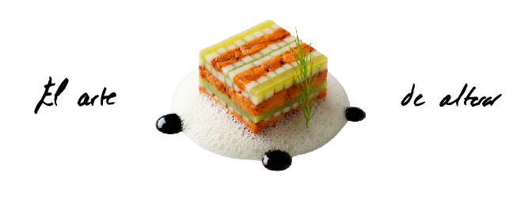
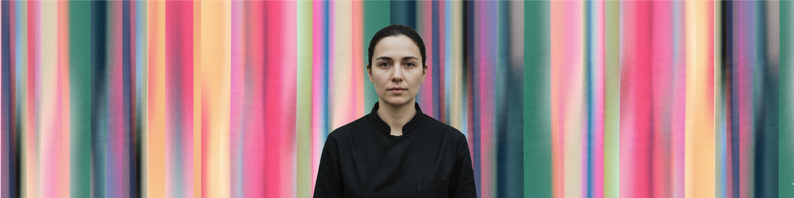
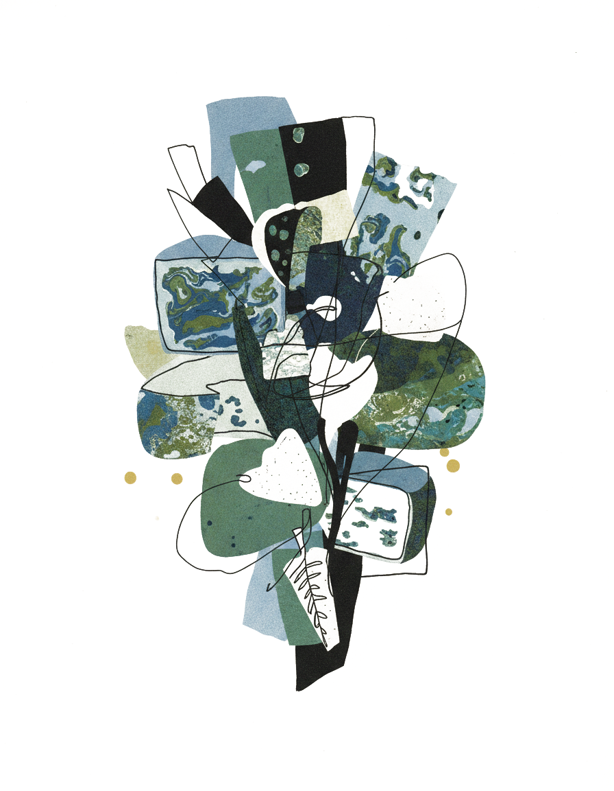
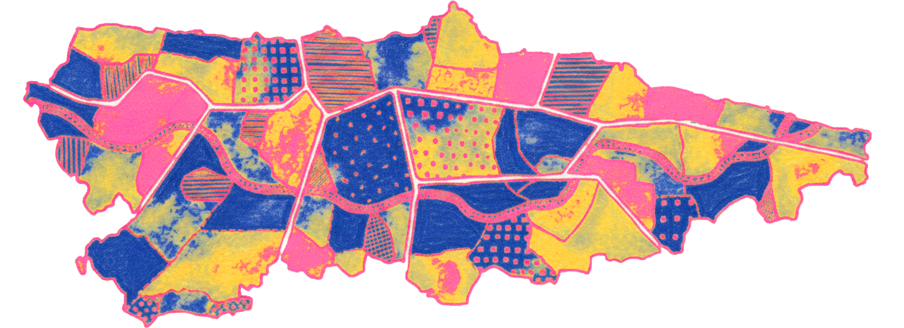

Semana del 15 al 21 de junio

Nino nació en un pequeño pueblo de la región de Kajeti, en el este de Georgia. Aprendió a cocinar con su abuela utilizando productos locales, fermentaciones tradicionales y recetas transmitidas oralmente generación tras generación.
A los 27 años emigró a Berlín y comenzó trabajando en cocinas de barro hasta abrir su pequeño local de apenas seis mesas en Lichtenberg. Sin inversión y sin prensa empezó sirviendo platos de su infancia.
En Nuberu, Nino desarrolla una residencia gastronómica temporal donde desastramos un menú con ingredientes asturianos y técnicas tradicionales caucásicas: humo, fermentación, hierbas frescas, lácticos ácidos y pan vivo.

Evento actual
Las tardes del 20 al 27 de junio se disfrutará de una cata de quesos Asturianos mientras María Ramírez nos deleitará con su pintura en vivo.
Reservar experienciaLo local sabe mejor
Innovación con producto local
Gastronomía y arte circulares
Todos nuestros productos tienen origen en la Comunidad de Asturias. Priorizando siempre el consumo local y las buenas prácticas agroganaderas.

Sostenibilidad:
Sostenibilidad:
Sostenibilidad:
Sostenibilidad:
Sostenibilidad:
Sostenibilidad:
En el mapa se muestran 6 nuestros principales proveedores que nos abastecen en 2025, de los que también utilizamos con sus desechos para crear arte.